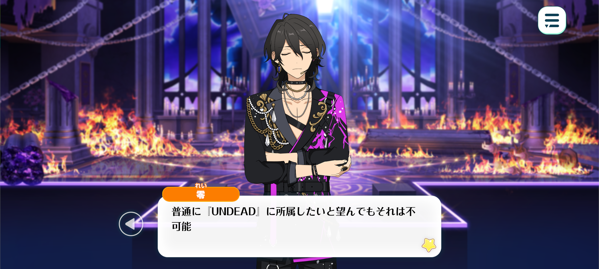
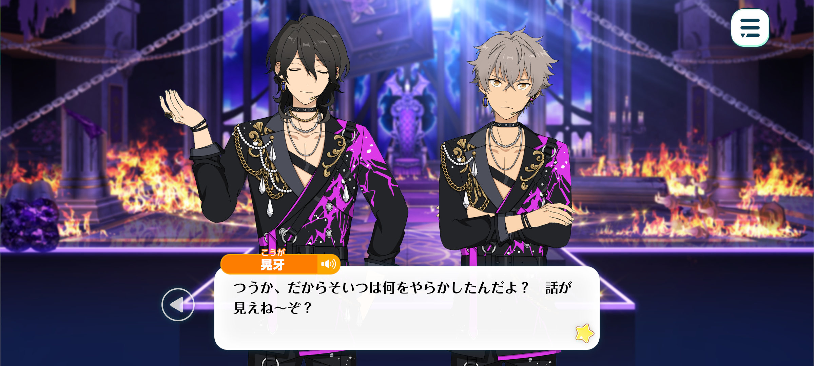
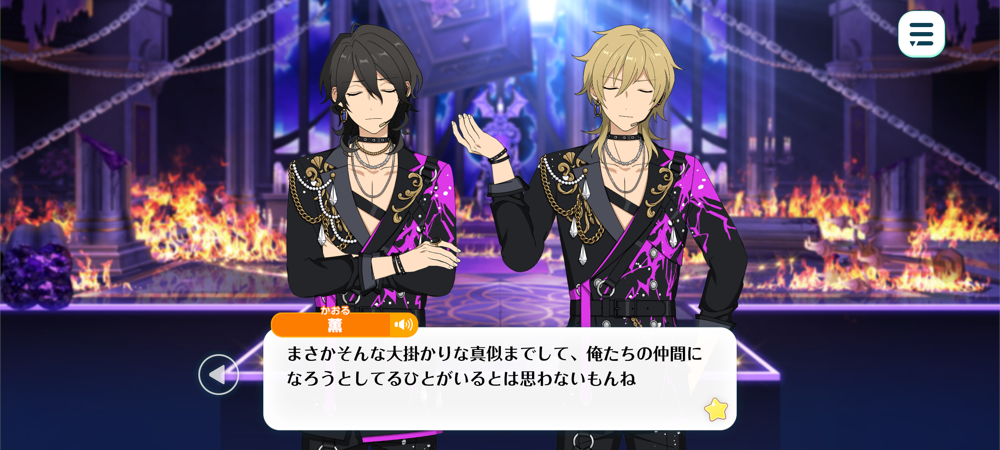

PSYCHOBREAK — Chapter 16



Rei: However, unlike RYUSEITAI or Knights, we have never actively recruited new members.
If someone wished to join UNDEAD, it simply wouldn't be possible.
Even if they were to apply, they would be turned away. They wouldn't have the ability to keep up with us in the first place. And I have no desire to look someone who admires me in the eye and tell them, 'You're simply not good enough. We have no need for you.'
I dislike doing unpleasant things. I really do.
And so, the culprit resorted to underhanded methods.
He chose the easy, shameless path, the one that would cause him the least amount of pain.
Kaoru: And there's something else worth mentioning. As you know, Yumenosaki has quite a few students from influential families, particularly local ones.
Our culprit was one of them. I think his family owned a pharmaceutical company, didn't they?
Rei: Had he taken over the family business, he could have enjoyed a rather comfortable life. But I suppose the prospect of settling into an ordinary working life was simply too troubling to him.
Or perhaps he lacked the talent or intelligence necessary to take over the business in the first place.
In any case, once he'd amassed enough money, he enrolled at Yumenosaki and spent his days living the life of a pampered young aristocrat. Though the details of his circumstances remain somewhat unclear, and, to be perfectly frank, I have little interest in them.
He used his considerable wealth and influence to ensnare us.
Kaoru: It’s giving an off-brand version of Tenshouin-kun.
Rei: Quite. A Tenshouin-kun without ambition, passion, intelligence or talent.
Kaoru: Isn't that just another way of saying he's got absolutely nothing going for him?
Rei: Tenshouin-kun does at least have a rather cute face. But I suppose our culprit really did have nothing whatsoever.
A man with nothing to his name, and yet unable to abandon his dreams... So he resorted to crime.
That, in essence, is the whole story.

Koga: So what the hell did he actually do? I haven't got a clue what you're talkin' about.
Adonis: ...I see. When you look at everything that's happened, the culprit's true intentions become quite clear.
To begin with, he tried to frame me as the mastermind behind the whole affair.
In the dream, I was practically made out to be the leader of the 'vampires'.
The delinquent group that had been causing trouble throughout the town before eventually being suppressed.
By doing so, the culprit may have been trying to force his own former position onto me, while taking for himself the position I had earned as a member of UNDEAD.
In other words, he was trying to replace me.
Even if it wasn't true, even if it was nothing more than a distorted dream, that was what he had come to wish for.
It's clear that he wanted to join UNDEAD. And that was enough for our senpais to work out who the culprit was.
Koga: Cut it out, Adonis... This happens every time. You're so damn smart and perceptive, you make me look like a fuckin' idiot in comparison.
Adonis: Oh. I’m sorry. It’s okay, Oogami. You make up for it with your excellent intuition.
Koga: I swear, everyone always says the same thing. That I'm stupid, but I've got good instincts.
Rei: Fufu. Adonis-kun's deductions are absolutely correct. You're such a clever boy. Such a good boy. And so very adorable.
Adonis: Thank you.
Rei: As we know, the culprit's wishes never came true, not even in our dreams.
Naturally, it was never going to happen. I suspect he simply thought Adonis-kun would be the easiest member of UNDEAD to replace...
Adonis: That is probably true. If you look at things objectively, I am the most replaceable member of UNDEAD.
After all, Sakuma-senpai is our leader, Oogami is the one who holds the group together, and Hakaze-senpai is so exceptionally capable that no one could possibly take his place.
I am the member that UNDEAD needs the least.
Koga: The hell you mean! I’m gonna fuckin’ kill that guy…!
Kaoru: Yeah, I'm a little pissed off, too. But don't worry. We'll make sure the culprit faces the proper consequences under the law. I might as well put my family's influence to good use for once.
Rei: We shall leave that matter in your hands. We are neither police officers nor judges, and it is not our place to pass judgement on others.
Nevertheless, the culprit's foolish little scheme will be brought to an end.
In truth, he never stood a chance of taking Adonis-kun's place. His plan fell apart without us even having to intervene.
We may have influenced things to some extent through our actions, but even our past selves in that recollection came to accept Adonis-kun as one of their own.
I never claimed he was a particularly intelligent delinquent, after all.
Adonis: I didn't witness that recollection myself, but... is that so? I'm glad to hear it.
Thank you for believing me.
Koga: I’ll always believe you! Fuck, I’m still so pissed!
Rei: Fufu. But to the culprit, all of that was merely a game. His true objective lay elsewhere.
And that, precisely, was HELLSING.
Koga: Ah, right—
Rei: We accepted these AI idols, if only temporarily, and began performing alongside them.
The rest is relatively straightforward. Until now, the AIs have been operating independently. However, from this point onwards, the culprit would be able to control them, much like a player controlling a character in a video game.
His plan was to continue his idol activities as one of our comrades, using HELLSING as his disguise.
He had prepared everything in advance: the AIIE experiment, the robots designed to look just like us and Ra*bits, and that research facility which was little more than an elaborate façade.
He used his wealth and influence to deceive us.
Through a series of fraudulent messages, he lured us into participating in a suspicious experiment. Then, once we had fallen asleep, he set HELLSING in motion and presented us with a fait accompli.
His plan began well.

Kaoru: Who would've thought someone would go to such extraordinary lengths just to become our friend?
Those robots must've cost a fortune, too. He's spent an absolutely ridiculous amount of money on all this.
Koga: But why go that far...? Did he really wanna be part of UNDEAD that badly?
Then why didn't he just fuckin’ say so!? Tell us you wanna be our friend! Even if we turn you down, don't give up! Keep asking! If you'd just told us how you felt, we might've accepted you!
Why’d he go through such a roundabout way instead of jus’ askin’ us normally—
Rei: He believed he had chosen the quickest and easiest path, yet ended up taking an enormous detour. That, I believe, is the lesson we ought to take away from this incident.
After all, we too have dabbled in rather dubious dealings in our search for an easy way out of our own difficulties. We are hardly in a position to laugh at him.
God gives us trials to overcome, whilst the Devil whispers sweet promises to foolish human beings who would rather avoid them. We must be wary of such temptations.
At any rate, once we had identified the culprit, the rest was relatively simple.
Since he intended to drive Adonis-kun out and take his place, the position he was trying to force upon Adonis-kun must have been the one he himself had originally occupied.
Koga: So, the leader of the ‘vampires’?
Rei: Even if he wasn't their leader, he must at least have been one of their number. With that in mind, we returned to the dream world to search for him.